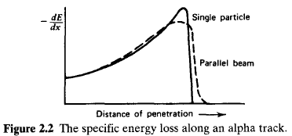
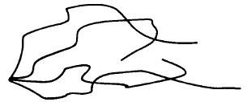
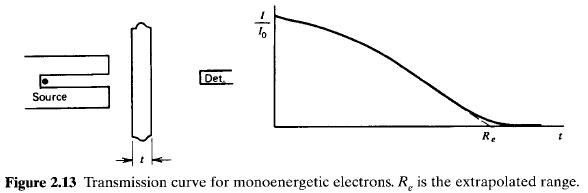
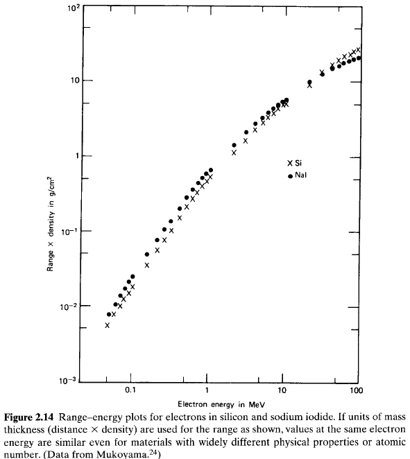
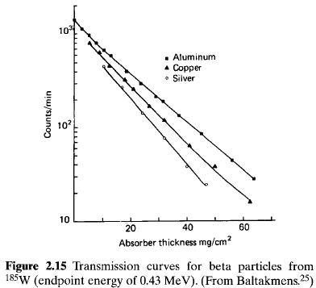
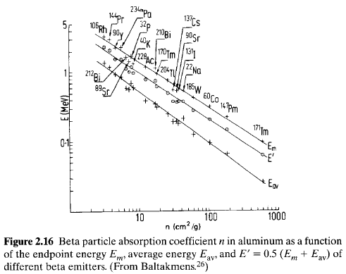
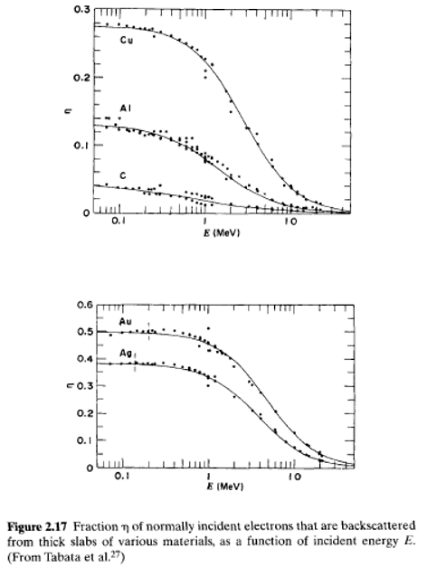

To organize the discussions that follow, it is convenient to arrange the four major categories of radiations introduced in Chapter 1 into the following matrix:
| Charged Particulate Radiations | Uncharged Radiations | |
|---|---|---|
| Heavy charged particles (characteristic distance \(\cong 10^{-5} m\)) |
\(\Leftarrow\) | Neutrons (characteristic length \(\cong 10^{-1} m\)) |
| Fast electrons (characteristic distance \(\cong 10^{-3} m\)) |
\(\Leftarrow\) | X-rays and gamma rays (characteristic length \(\cong 10^{-1} m\)) |
The entries in the left column represent the charged particulate radiations that, because of the electric charge carried by the particle, continuously interact through the coulomb force with the electrons present in any medium through which they pass. The radiations in the right column are uncharged and therefore are not subject to the coulomb force. Instead, these radiations must first undergo a "catastrophic" interaction (often involving the nucleus of constituent atoms) that radically alters the properties of the incident radiation in a single encounter. In all cases of practical interest, the interaction results in the full or partial transfer of energy of the incident radiation to electrons or nuclei of the constituent atoms, or to charged particle products of nuclear reactions. If the interaction does not occur within the detector, these uncharged radiations (e.g., neutrons or gamma rays) can pass completely through the detector volume without revealing the slightest hint that they were ever there.
The horizontal arrows shown in the diagram illustrate the results of such catastrophic interactions. An \(X\text{-}\) or gamma ray, through the processes described in this chapter, can transfer all or part of its energy to electrons within the medium. The resulting secondary electrons bear a close similarity to the fast electron radiations (such as the beta particle) discussed in Chapter 1. Devices designed to detect gamma rays are tailored to promote such interactions and to fully stop the resulting secondary electrons so that their entire energy may contribute to the output signal. In contrast, neutrons may interact in such a way as to produce secondary heavy charged particles, which then serve as the basis of the detector signal.
Also listed in the diagram are order-of-magnitude numbers for the characteristic distance of penetration or average path length (range or mean free path) in solids for typical energy radiations in each category.
Upon entering any absorbing medium, the charged particle immediately interacts simultaneously with many electrons. In any one such encounter, the electron feels an impulse from the attractive coulomb force as the particle passes its vicinity. Depending on the proximity of the encounter, this impulse may be sufficient either to raise the electron to a higher-lying shell within the absorber atom (excitation) or to remove completely the electron from the atom (ionization). The energy that is transferred to the electron must come at the expense of the charged particle, and its velocity is therefore decreased as a result of the encounter. The maximum energy that can be transferred from a charged particle of mass rn with kinetic energy \(E\) to an electron of mass \(m_{0}\) in a single collision is \(4Em_{0}/m\), or about \(1/500\) of the particle energy per nucleon. Because this is a small fraction of the total energy, the primary particle must lose its energy in many such interactions during its passage through an absorber. At any given time, the particle is interacting with many electrons, so the net effect is to decrease its velocity continuously until the particle is stopped.
Representative paths taken by heavy charged particles in their slowing down process are schematically represented in the sketch below. Except at their very end, the tracks tend to be quite straight because the particle is not greatly deflected by any one encounter, and interactions occur in all directions simultaneously. Charged particles are therefore characterized by a definite range in a given absorber material. The range, to be defined more precisely below, represents a distance beyond which no particles will penetrate.
The products of these encounters in the absorber are either excited atoms or ion pairs. Each ion pair is made up of a free electron and the corresponding positive ion of an absorber atom from which an electron has been totally removed. The ion pairs have a natural tendency to recombine to form neutral atoms, but in some types of detectors, this recombination is suppressed so that the ion pairs may be used as the basis of the detector response.
In particularly close encounters, an electron may undergo a large enough impulse that after having left its parent atom, it still may have sufficient kinetic energy to create further ions. These energetic electrons are sometimes called delta rays and represent an indirect means by which the charged particle energy is transferred to the absorbing medium. Under typical conditions, the majority of the energy loss of the charged particle occurs via these delta rays. The range of the delta rays is always small compared with the range of the incident energetic particle, so the ionization is still formed close to the primary track. On a microscopic scale, one effect of this process is that the ion pairs normally do not appear as randomly spaced single ionizations, but there is a tendency to form many "clusters" of multiple ion pairs distributed along the track of the particle.
For particles with a given charge state, \(S\) increases as the particle velocity is decreased. The classical expression that describes the specific energy loss is known as the Bethe formula and is written
\[ - \frac{dE}{dx} = \frac{4\pi e^{4}z^{2}}{m_{0}v^{2}}NB \tag{2.2} \] where \[ B \equiv Z \left[ \ln\frac{2m_{0}v^{2}}{I} - \ln \left( 1 - \frac{v^{2}}{c^{2}} - \frac{v^{2}}{c^{2}} \right) \right] \] In these expressions, \(v\) and \(ze\) are the velocity and charge of the primary particle, \(N\) and \(Z\) are the number density and atomic number of the absorber atoms, \(m_{0}\) is the electron rest mass, and \(e\) is the electronic charge. The parameter \(I\) represents the average excitation and ionization potential of the absorber and is normally treated as an experimentally determined parameter for each element. For nonrelativistic charged particles (\(v \ll c\)), only the first term in \(B\) is significant. Equation (2.2) is generally valid for different types of charged particles provided their velocity remains large compared with the velocities of the orbital electrons in the absorbing atoms.The expression for \(B\) in Eq. (2.2) varies slowly with particle energy. Thus, the general behavior of \(dE/dx\) can be inferred from the behavior of the multiplicative factor. For a given nonrelativistic particle, \(dE/dx\) therefore varies as \(1/v^{2}\), or inversely with particle energy. This behavior can be heuristically explained by noting that because the charged particle spends a greater time in the vicinity of any given electron when its velocity is low, the impulse felt by the electron, and hence the energy transfer, is largest. When comparing different charged particles of the same velocity, the only factor that may change outside the logarithmic term in Eq. (2.2) is \(z^{2}\), which occurs in the numerator of the expression. Therefore, particles with the greatest charge will have the largest specific energy loss. Alpha particles, for example, will lose energy at a rate that is greater than protons of the same velocity but less than that of more highly charged ions. In comparing different materials as absorbers, \(dE/dx\) depends primarily on the product \(NZ\), which is outside the logarithmic term. This product \(NZ\) represents the electron density of the absorber. High atomic number, high-density materials will consequently result in the greatest linear stopping power.
The variation of the specific energy loss for a number of different charged particles is shown in Fig. 2.1 over a wide energy range. This figure shows that the value of \(dE/dx\) for many different types of charged particles approaches a near-constant broad minimum value at energies above several hundred \(MeV\), where their velocity approaches the velocity of light. This specific energy loss corresponds to about \(2 MeV\) per \(g/cm^{2}\) in light materials. Because of their similar energy loss behavior, such relativistic particles are sometimes referred to as "minimum ionizing particles." Fast electrons also fall into this category at energies as low as about \(1 MeV\) because their much lower mass results in relativistic velocities even at such modest energy

The Bethe formula begins to fail at low particle energies where charge exchange between the particle and absorber becomes important. The positively charged particle will then tend to pick up electrons from the absorber, which effectively reduce its charge and consequent linear energy loss. At the end of its track, the particle has accumulated \(z\) electrons and becomes a neutral atom.

Related plots showing \(-dE/dx\) versus particle energy for a number of different heavy charged particles are given in Fig. 2.3. These examples illustrate the energy at which charge pickup by the ion becomes significant. Charged particles with the greatest number of nuclear charges begin to pick up electrons early in their slowing-down process. Note that in an aluminum absorber, singly charged hydrogen ions (protons) show strong effects of charge pickup below about \(100 keV\), but doubly charged \(^{3}He\) ions show equivalent effects at about \(400 keV\).
Figure 2.4 shows a schematic presentation of the energy distribution of a beam of initially monoenergetic particles at various points along its range. Over the first portion, the distribution becomes wider (and more skewed) with penetration distance, showing the increasing importance of energy straggling. Near the end of the range, the distribution narrows again because the mean particle energy has greatly been reduced.
The range of the alpha particles in the absorber material can be determined from this curve in several ways. The mean range is defined as the absorber thickness that reduces the alpha particle count to exactly one-half of its value in the absence of the absorber. This definition is most commonly used in tables of numerical range values. Another version that appears in the literature is the extrapolated range, which is obtained by extrapolating the linear portion of the end of the transmission curve to zero.
The range of charged particles of a given energy is thus a fairly unique quantity in a specific absorber material. In the early days of radiation measurement, experiments of the type sketched in Fig. 2.5 were widely used to measure the energy of alpha particles indirectly by determining the absorber thickness equivalent to their mean range. With the availability of detectors that provide an output signal directly related to the alpha particle energy, such indirect measurements are no longer necessary.
Some graphs of the mean range of various charged particles in materials of interest in detectors are given in Figs. 2.6 through 2.8. As one obvious application of these curves, any detector that is to measure the full incident energy of a charged particle must have an active thickness that is greater than the range of that particle in the detector material.
Using typical range values, stopping times calculated from Eq. (2.3) for charged particles are a few picoseconds in solids or liquids and a few nanoseconds in gases. These times are generally small enough to be neglected for all but the fastest-responding radiation detectors.
For absorber thicknesses through which the energy loss is not small, it is not simple to obtain a properly weighted \((-dE/dx)_{avg}\) value directly from such data. In these cases, it is easier to obtain the deposited energy in a way that makes use of range-energy data of the type plotted in Figs. 2.6 through 2.8. The basis of the method is as follows: Let \(R_{1}\) represent the full range of the incident particle with energy Eo in the absorber material. By subtracting the physical thickness of the absorber \(t\) from \(R_{1}\), a value \(R_{2}\) is obtained that represents the range of those alpha particles that emerge from the opposite surface of the absorber. By finding the energy corresponding to \(R_{2}\), the energy of the transmitted charged particles \(E_{t}\) is obtained. The deposited energy \(\Delta E\) is then given simply by \(E_{0} - E_{\gamma}\). These steps are illustrated below:
The procedure is based on the assumption that the charged particle tracks are perfectly linear in the absorber, and the method does not apply in situations where the particle can be significantly deflected (such as for fast electrons).The combined effects of particle range and the decrease in \(dE/dx\). with increasing energy are illustrated in Fig. 2.12. Here the energy loss of protons in a thin detector is plotted versus the incident proton energy. For low energies, the proton range is less than the detector thickness. Therefore, as the energy is increased, the energy deposited in the detector (which is just equal to the incident energy) increases linearly. At a proton energy of \(425 keV\), the range is exactly equal to the detector thickness. For higher energies, only a portion of incident energy is deposited, and the transmitted proton carries off the remainder. Under these conditions, the energy deposited in the detector is given by Eq. (2.4), or simply the product of the detector thickness and the average linear stopping power. Because the stopping power continuously decreases with increasing energy in this region (see Fig. 2.3), the deposited energy therefore decreases with further increases in the incident proton energy. The second curve in Fig. 2.12 plots the transmitted energy (\(E_{t}\) on the diagram on the preceding page) as recorded by a second thick detector.
It can be shown that the range of a charged particle in a compound material can also be estimated provided its range is known in all the constituent elements. In this derivation, it is necessary to assume that the shape of the \(dE/dx\) curve is independent of the stopping medium. Under these conditions, the range in the compound is given by \[ R_{c} = \frac{M_{c}}{\sum_{i}n_{i}(A_{i}/R_{i})} \tag{2.6} \] where \(R_{i}\) is the range in element \(i\), \(n_{i}\) is the number of atoms of element \(i\) in the molecule, \(A_{i}\) is the atomic weight of element \(i\), and \(M_{c}\) is the molecular weight of the compound.
If range data are not available for all the constituent elements, estimates can be made based on a semiempirical formula (commonly called the Bragg-Kleeman rule as well) \[ \frac{R_{1}}{R_{0}} \cong \frac{\rho_{0}\sqrt{A_{1}}}{\rho_{1}\sqrt{A_{0}}} \tag{2.7} \] where \(\rho\) and \(A\) represent density and atomic weight, and subscripts \(0\) and \(1\) refer to different absorbing materials.The accuracy of this estimate diminishes when the two materials are of widely different atomic weights, so it is always best to use range data from a material that is as close as possible in A to the absorber of interest.
Range data can also be generalized to different charged particles within a given absorber material. By integration of Eq. (2.2), it can be shown that the range of a particle of mass \(m\)) and charge \(z\) can be represented by \[ R_{v} = \frac{m}{z^{2}}F(v) \tag{2.8} \] where \(F(v)\) represents a unique function of the particle initial velocity \(v\). For particles of the same initial velocity, this factor will be identical and therefore we can write \[ R_{a}(v) = \frac{m_{a}z_{b}^{2}}{m_{b}z_{a}^{2}}R_{b}(v) \tag{2.9} \] where the subscripts \(a\) and \(b\) refer to different charged particles. Thus, the range of a particle for which data are not available can be estimated by calculating its initial velocity, finding the range of any other particle of the same initial velocity in the same material, and applying Eq. (2.9). It should be emphasized that these estimates are only approximate, because no account is taken of the change in charge state of the particle as it nears the end of its path. Correction factors necessary to compensate for this effect and predict the range more accurately are presented by Evans.
An important feature of a fission fragment track is the fact that the specific energy loss \((-dE/dx)\) decreases as the particle loses energy in the absorber.This behavior is in marked contrast to the lighter particles, such as alpha particles or protons, and is a result of the continuous decrease in the effective charge carried by the fragment as its velocity is reduced. The pickup of electrons begins immediately at the start of the track, and therefore the factor \(z\) in the numerator of Eq. (2.2) continuously drops. The resulting decrease in \(-dE/dx\) is large enough to overcome the increase that normally accompanies a reduction in velocity. For particles with much lower initial charge state, such as the alpha particle, electron pickup does not become significant until near the end of the range.
A single heavy ion such as a fission fragment can produce hundreds of these escaping secondaries, whereas lighter alpha particles might typically result in 10 or fewer secondaries per particle. Fast electrons such as beta particles are much less likely to create escaping secondaries, and only a few percent will result in secondary emission. To a first approximation, the yield of secondaries will be proportional to the energy lost within a near-surface layer whose thickness represents the maximum distance an electron will tend to migrate from its point of origin and still retain enough energy to escape from the surface. Thus, the \(dE/dx\) value of the particle is a reasonable predictor of secondary yield from a given material. Those materials with low work function and large escape distance will have the largest yield. Thin films of alkali halides, and cesium iodide in particular, are observed to produce secondaries with high yield. Models of the electron transport in alkali halides confirm their suitability as prolific sources of secondary electrons.
The energy spectrum of these escaping secondary electrons is a continuum with a mean value that is very low compared with the primary particle energy. For example, the energy of secondaries from a carbon surface average \(60-100 eV\) for alpha particles and \(290 eV\) for fission fragments. The energy of secondary electrons produced by lighter particles such as fast electrons is even lower. Thus it is normally difficult or impossible to observe the secondaries since they are readily reabsorbed even in air. If they are emitted into a vacuum or low-pressure gas, however, they can be accelerated and easily guided by electric fields because of their low initial velocity. For example, an electric field created by the application of \(1000 V\) with respect to the surface would have a strong influence on the trajectory of a \(100 eV\) electron, but almost no effect on a \(1 MeV\) fast electron. This property has led to the successful use of secondary electron emission from surfaces as a means of detecting the positions at which beta particles emerge from a surface and in the imaging of X-rays and fast electrons. Secondary electrons emitted from a thin foil and directed to an external electron detector such as a microchannel plate have also served as the basis for fast timing measurements with heavy ions. One special application of the secondary electron emission process will be detailed in Chapter 9, where a typical electron in a photomultiplier tube is accelerated to a few hundred eV before striking a solid surface, causing the emission of 5-10 secondaries in a charge multiplication process.

Large deviations in the electron path are now possible because its mass is equal to that of the orbital electrons with which it is interacting, and a much larger fraction of its energy can be lost in a single encounter. In addition, electron-nuclear interactions, which can abruptly change the electron direction, sometimes occur.Electrons also differ from heavy charged particles in that energy may be lost by radiative processes as well as by coulomb interactions. These radiative losses take the form of bremsstrahlung or electromagnetic radiation, which can emanate from any position along the electron track. From classical theory, any charge must radiate energy when accelerated, and the deflections of the electron in its interactions with the absorber correspond to such acceleration. The linear specific energy loss through this radiative process is \[ -\left(\frac{dE}{dx}\right)_{r} = \frac{NEZ(Z + 1)e^{4}}{137m_{0}^{2}c^{4}}\left(4\ln\frac{2E}{m_{0}c^{4}} - \frac{4}{3}\right) \tag{2.11} \]
For the particle types and energy ranges of interest in this text, only fast electrons can have a significant yield of bremsstrahlung. The yield from heavy charged particles is negligible as indicated by the presence of the \(m_{0}^{2}\) factor in the denominator of the multiplicative term in Eq. (2.11). The factors of \(E\) and \(Z^{2}\) in the numerator of Eq. (2.11) show that radiative losses are most important for high electron energies and for absorber materials of large atomic number. For typical electron energies, the average bremsstrahlung photon energy is quite low (see Fig. 1.6) and is therefore normally reabsorbed fairly close to its point of origin. In some cases, however, the escape of bremsstrahlung can influence the response of small detectors.
The total linear stopping power for electrons is the sum of the collisional and radiative losses: \[ \frac{dE}{dx} = \left(\frac{dE}{dx}\right)_{c} + \left(\frac{dE}{dx}\right)_{r} \tag{2.12} \] The ratio of the specific energy losses is given approximately by \[ \frac{(dE/dx)_{r}}{(dE/dx)_{c}} \cong \frac{EZ}{700} \tag{2.13} \] where \(E\) is in units of \(MeV\). For the electrons of interest here (such as beta particles or secondary electrons from gamma-ray interactions), typical energies are less than a few \(MeV\). Therefore, radiative losses are always a small fraction of the energy losses due to ionization and excitation and are significant only in absorber materials of high atomic number.

The concept of range is less definite for fast electrons than for heavy charged particles, because the electron total path length is considerably greater than the distance of penetration along the initial velocity vector. Normally, the electron range is taken from a transmission plot, such as that given in Fig. 2.13, by extrapolation of the linear portion of the curve to zero and represents the absorber thickness required to ensure that almost no electrons can penetrate the entire thickness.

For equivalent energy, the specific energy loss of electrons is much lower than that of heavy charged particles, so their path length in typical absorbers is hundreds of times greater. As a very crude estimate, electron ranges tend to be about \(2 mm\) per \(MeV\) in low-density materials, or about \(1 mm\) per \(MeV\) in materials of moderate density
Tabular data are given in Refs. 22 and 23 for the stopping power and range of electrons and positrons in elements and compounds, covering a large region of energy. To a fair degree of approximation, the product of the range times the density of the absorber is a constant for different materials for electrons of equal initial energy. Plots of the range of electrons in two common detector materials are given in Fig. 2.14.

The transmission curve for beta particles emitted by a radioisotope source, because of the continuous distribution in their energy, differs significantly from that sketched in Fig. 2.13 for monoenergetic electrons. The "soft" or low-energy beta particles are rapidly absorbed even in small thicknesses of the absorber, so that the initial slope on the attenuation curve is much greater. For the majority of beta spectra, the curve happens to have a near-exponential shape and is therefore nearly linear on the semilog plot of the type shown in Fig. 2.15. This exponential behavior is only an empirical approximation and does not have a fundamental basis as does the exponential attenuation of gamma rays [see Eq. (2.20)]. An absorption coefficient \(n\) is sometimes defined by \[ \frac{I}{I_{0}} = e^{-nt} \tag{2.14} \] where \begin{eqnarray} I_{0} &=& {\rm counting \, rate \, without \, absorber} \\ I &=& {\rm counting \, rate \, with \, absorber} \\ t &=& {\rm absorber \, thickness \, in \,} g/cm^{2} \end{eqnarray}The coefficient \(n\) correlates well with the endpoint energy of the beta emitter for a specific absorbing material. This dependence is shown in Fig. 2.16 for aluminum. Through the use of such data, attenuation measurements can be used to identify indirectly endpoint energies of unknown beta emitters, although direct energy measurements are more common.

Backscattering is most pronounced for electrons with low incident energy and absorbers with high atomic number. Figure 2.17 shows the fraction of monoenergetic electrons that are backscattered when normally incident on the surface of various absorbers. Additional data for materials commonly used as electron detectors are given in Table 10.1.

Backscattering can also influence the apparent yield from radioisotope sources of beta particles or conversion electrons. If the source is deposited on a thick backing, electrons that are emitted initially into this backing may backscatter and re-emerge from the surface of the source.
Positrons differ significantly, however, in that the annihilation radiation described in Chapter 1 is generated at the end of the positron track. Because these \(0.511\) MeV photons are very penetrating compared with the range of the positron, they can lead to the deposition of energy far from the original positron track.